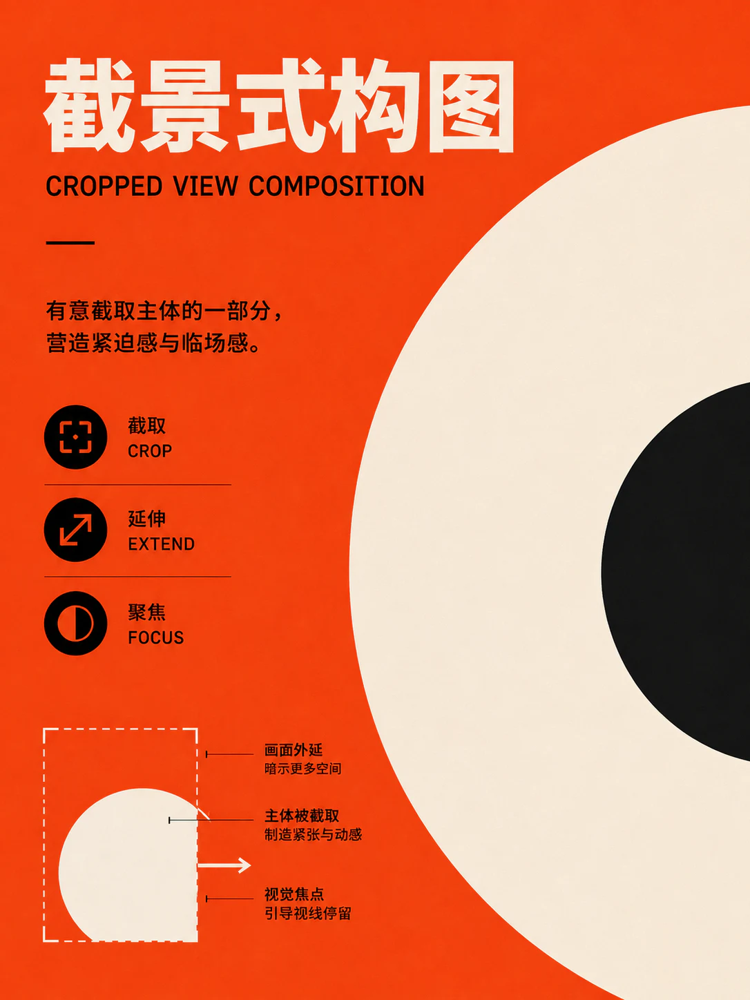

为什么截掉反而更大
The Paradox of Cropping — Centripetal Frame vs. Centrifugal Mask
把一整个圆画全，眼睛看到的就是纸上那枚圆；把圆放大到跨出画框、只留三分之二，大脑反而会顺着弧线往画外补出一座庞然大物。
法国电影理论家安德烈·巴赞在《电影是什么？》的〈绘画与电影〉一文中，把这两种边界区分得极其透彻：传统封闭式「画框（cadre）」是向心的，把世界收拢锁死在四边之内；而截景式的「遮幅（cache）」是离心的，它只是从正在发生的宏大现实里掀开一扇窗口，让画外空间继续向四周延展。
格式塔心理学同样解释了这份紧迫感：鲁道夫·阿恩海姆在《艺术与视知觉》中指出，当完整轮廓被画框干脆截断时，观者的视觉系统会自动启动「完形补全」；边缘切口像一根拉紧的弓弦，把人拉近到几乎贴着主体呼吸的距离。
切在哪才不显小气
Where the Blade Falls — Avoiding Tangents & Joint Cuts
截景最怕的不是切得多，而是切得犹豫和切中关节点。轮廓刚好蹭着画框边线（擦边），或者只削掉薄薄一层皮，观者会当成排版事故；人物或器物恰好断在脖颈、手腕、膝盖、瓶口细颈处，眼睛就会读出刺目的折断感。
选择切刃落点（点击试切）
- 要么留足 15% 以上透气，要么干脆切入 16%–58%，绕开 ±3% 擦边带。
- 切饱满块面，不切细窄关节：宁可切胸腹、大腿中段或瓶腹，不切脖颈、手腕、膝踝、瓶颈。
- 动势留前切后：人物行进或枝干伸展的方向留出出口，把刀落在来路一侧。
截景从哪来
Lineage — From Ukiyo-e & Impressionism to Modern Ink and Hors-Champ
截景式构图不是某一个流派的专利：它在十九世纪中叶的日本浮世绘里大放异彩，经快拍摄影冲垮欧洲学院派的「完整居中」铁律，又在二十世纪中国画与电影理论中被提炼成严密的「四边造险」与「画外六空间」。
什么时候用，何时别用
When Cropping Works — And Where Full View Is Mandatory
小练习：哪一刀最准？
Practice — Four Crops of the Exact Same Poster
你要为「大漆器物展」定一张竖版主视觉。下面四张海报的尺寸、配色、文字位置与器盘造型完全相同，只改变了画框对大漆圆盘的裁切位置与放大倍率。点选你认为最成立的一张：
原海报与关键词
Original Poster #324 & Keywords
